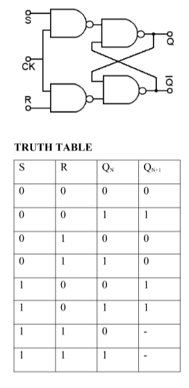
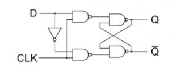
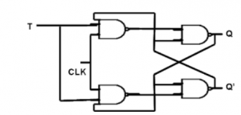
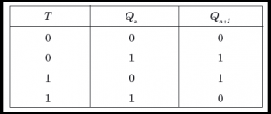

Sequential Logic: Flip-Flops and Registers
-
A flip-flop is a sequential circuit which consists of a single binary state of information or data.
-
The digital circuit is a flip-flop which has two outputs and are of opposite states. It is also known as a Bistable Multivibrator.
The 4 Types of Flip-Flops
1. SR Flip-Flop (Set-Reset)
The foundation of all flip-flops. It uses two inputs to control a single bit of data.
Inputs: S (Set to 1), R (Reset to 0)
How it works:
S = 1, R = 0 → Output becomes 1.S = 0, R = 1 → Output becomes 0.S = 0, R = 0 → Hold (remembers the last state).S = 1, R = 1 → Invalid/Forbidden. (Both outputs try to go low at once, crashing the system).

2. JK Flip-Flop (The Fixer)
An upgraded SR flip-flop. It eliminates the forbidden state by routing outputs back into the inputs.
Inputs: J (acts like Set), K (acts like Reset)
How it works:
J = 1, K = 0 → Output becomes 1.J = 0, K = 1 → Output becomes 0.J = 0, K = 0 → Hold (no change).J = 1, K = 1 → Toggle. (Inverts the output: 0 becomes 1, and 1 becomes 0).
The Flaw: If the clock pulse stays high too long, the output will toggle uncontrollably (Race-Around Condition).

3. D Flip-Flop (Data / Delay)
The most common flip-flop used today. It adds an inverter between S and R so the inputs can never match.
Input: D (Data)
How it works:
Whatever value is at D gets copied to the output on the next clock tick.
D = 1 → Output becomes 1.D = 0 → Output becomes 0.
Use case: Central component for computer memory (RAM) and CPU registers.


4. T Flip-Flop (Toggle)
Created by connecting the J and K inputs of a JK flip-flop together.
Input: T (Toggle)
How it works:
T = 0 → Hold (no change).T = 1 → Toggle (flips the output from 0 to 1, or 1 to 0).
Use case: Digital clocks, counters, and frequency dividers (it cuts clock speed exactly in half).


Master-Slave Flip-Flops
To eliminate the race-around condition of a standard JK flip-flop, a Master-Slave configuration is used.
- Structure: It cascades two flip-flops together. The first is the Master (positive-edge triggered), and the second is the Slave (negative-edge triggered via an inverter).
- Operation:
- When the clock is high (
CLK = 1), the Master accepts inputs while the Slave is locked.
- When the clock goes low (
CLK = 0), the Master locks its data, transferring its state to the Slave.
- Result: The output changes exactly once per clock period, ensuring total stability.
Shift Registers:
A Register is a group of flip-flops working together to store multiple bits of digital data. A Shift Register is a specialized register that moves (shifts) those stored bits laterally from one flip-flop to the next on every clock pulse.
Core Purpose of Shift Registers
- Data Storage: Temporarily holds binary words inside CPUs and controllers.
- Data Conversion: Translates data formatting between Serial (one wire, bit-by-bit) and Parallel (multiple wires, all at once).
- Time Delay: Delays a digital signal pipeline by a specific number of clock cycles.
The 4 Primary Types of Shift Registers
1. SISO (Serial-In, Serial-Out)
- Data Entry: One bit at a time, sequentially through a single input wire.
- Data Exit: One bit at a time, sequentially through a single output wire.
- How it works: It acts like a pipeline. A 4-bit SISO register requires 4 clock pulses to load data entirely, and 4 more pulses to shift it out completely.
- Primary Use: Digital time-delay lines and basic data buffers.
2. SIPO (Serial-In, Parallel-Out)
- Data Entry: One bit at a time, sequentially through a single input wire.
- Data Exit: All stored bits are read simultaneously from separate parallel output pins.
- How it works: Data creeps in bit-by-bit until the register is full. Once filled, the circuit reads all positions at the exact same moment.
- Primary Use: Converting single-line serial communications (like USB or SPI protocols) into parallel system data for processor buses.
3. PISO (Parallel-In, Serial-Out)
- Data Entry: All bits are loaded into the register simultaneously using multiple pins.
- Data Exit: Data is shifted out sequentially, one bit per clock cycle, through a single wire.
- How it works: A control pin switches the register into
Load mode to grab a full data byte instantly, then switches to Shift mode to stream it down a single line.
- Primary Use: Converting internal computer parallel data into serial streams for long-distance transmission over minimal wiring.
4. PIPO (Parallel-In, Parallel-Out)
- Data Entry: All bits are loaded simultaneously through parallel input wires.
- Data Exit: All bits are read simultaneously from parallel output wires.
- How it works: It does not actively shift data between internal flip-flops during normal operation. It instantly captures an entire multi-bit word on a clock edge and holds it steady.
- Primary Use: Temporary storage registers inside CPU arithmetic logic units (ALUs).